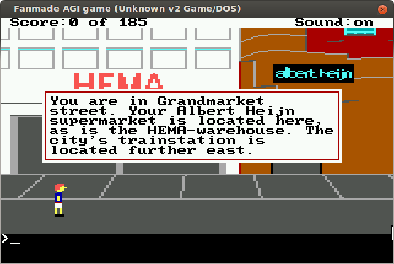
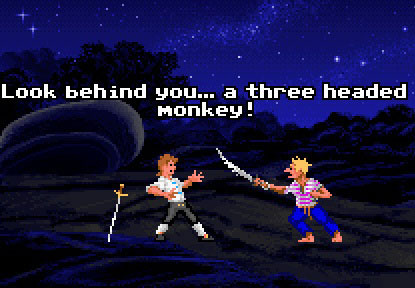
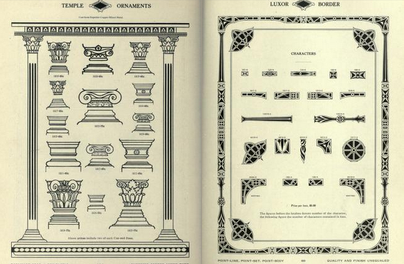
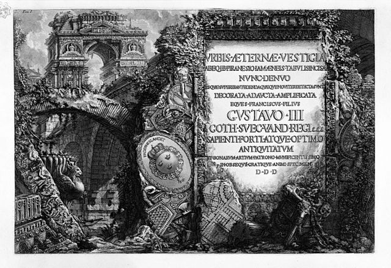

AGI: tekst in een vlak boven op het beeld
William Blake: tekst tussen de beelden

ScummVM: Losse tekstregels op het beeld

19e eeuwse typografie: tekst omgeven door decoratieve randen
Barnhart bros. & Spindler, Chicago – Book of type specimens (1881).

Piranesi: tekst als trompe l’oeil inscriptie